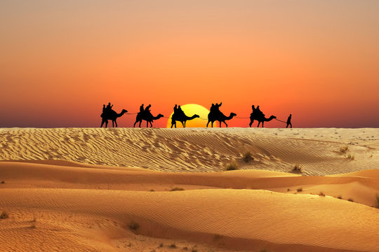
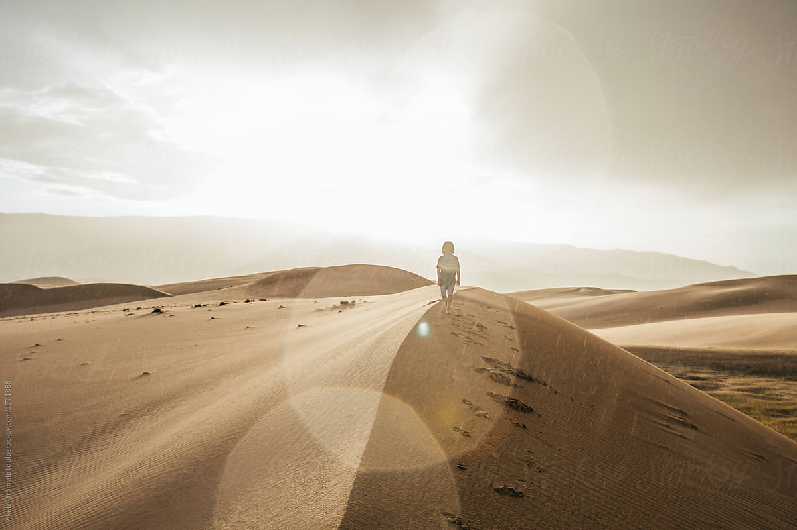

The main theme of the book is finding one's "Personal Legend", your true purpose in life. Just like the boys in the documentary your teacher showed, Santiago has to leave everything he knows to find where he truly belongs.

Santiago learns that everything in the universe is connected. When you want something with all your heart, you are closer to the Soul of the World.
The "grind" of Santiago is something I can relate to. Whether it's spending hours practicing with my basketball team or setting up complex scripts on my PC, the book shows that persistence is the key to reaching any goal.